器材库 > APS及其以下画幅可换镜头数码相机 > KP
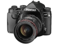
规格总览
产品类型
APS画幅可换镜头数码相机
发布日期
2017-01-26
影像规格
影像传感器
CMOS
影像传感器尺寸
23.5×15.6mm
总像素
2496万
有效像素
2432万
影像处理器
高速图像处理引擎 PRIME IV
低通滤镜
无
色彩空间
sRGB、AdobeRGB
静态图像格式
JPEG, RAW
静态图像尺寸
JPEG:L(24M:6016x4000)、M(14M:4608x3072)、S(6M:3072x2048)、XS(2M:1920x1280)RAW:(24M:6016x4000)
静态图像质量
RAW(14bit):PEF、DNGJPEG:★★★(super精细)、★★(精细)、★(好)、可同时保存RAW和JPEG
短片格式
MPEG4-AVC/H.264
短片尺寸
Full HD (1920x1080、60i/50i/30p/25p/24p)、HD (1280x720、60p/50p)
防抖系统
感光元件位移方式（SRII: Shake Reduction II）
除尘系统
通过超声波振动实现感光元件清洁功能 DRII（Dust Removal II）
镜头和对焦
镜头卡口
Pentax AF
兼容镜头
KAF4、KAF3、KAF2(不兼容电动变焦)、KAF、KA卡口镜头
对焦系统类型
TTL相位差异自动对焦
对焦点
27点对焦(中央25点为十字对焦点)
对焦模式
单次自动对焦(AF.S)、连续自动对焦(AF.C)、自动(AF.A)
AF辅助灯/光
有
曝光控制
测光系统
8.6万像素RGB传感器的TTL开放光圈测光
测光模式
中央重点测光, 点测光, 多区测光
测光范围
-3EV~20EV
曝光模式
场景自动分析、程序、感光度优先、快门优先、光圈优先、光圈＆快门优先、手动、长时间曝光、USER1、USER2、USER3、USER4、USER5
创意滤镜
色彩提取、替换颜色、玩具照相机、怀旧、高对比度、明暗、反转颜色、高对比抽色、硬派单色
快门速度
[机械快门]自动:1/6000秒～30秒、手动:1/6000秒～30秒(1/3EV步长或1/2EV步长)、长时间曝光 (可设定定时曝光:10秒～20分钟)[电子快门]自动:1/24000秒～30秒、手动:1/24000秒～30秒(1/3EV步长或1/2EV步长)
闪光同步速度
1/180秒
曝光补偿
±5EV以1/2或1/3EV级调整
自动包围曝光
2张/3张/5张
ISO感光度
100～819200 (1EV步长、1/2EV步长或1/3EV步长)
白平衡
自动白平衡、复合自动白平衡、 日光、阴影、阴天、荧光灯(D:日光色、N:日光白色、W:冷白色、L:暖白色)、白炽灯、CTE、手动白平衡(可保存3种设定)、色温设定(可保存3种设定)、拍摄影像设定
自拍
12秒、2秒、连拍
连拍
约7.0张/秒
闪光灯
内置闪光灯
弹出式
闪光模式
自动闪光(场景自动分析)、消减红眼自动闪光（场景自动分析）、强制闪光、消减红眼强制闪光、低速同步、消减红眼低速同步、后帘同步、手动闪光（FULL～1/128）、无线(用作闪光灯控制器）
闪光指数
约6.0（ISO100･m）
闪光补偿
-2 至 +1EV
取景器/显示屏
取景器
五棱镜取景器
取景范围
100%
取景放大倍率
0.95倍
屈光度调节范围
约-2.5～+1.5m-1
对焦屏
原像明亮磨砂对焦屏III、可更换式
LCD类型
彩色TFT LCD
LCD尺寸
3.0英寸
LCD像素
92.1万
LCD特性
翻转屏
亮度调节级数
±2级
Live View
有
Live View 显示
约100%视野率、放大显示(至多16倍)、网格线显示(16网格、黄金分割显示、刻度显示、正方形(小)、正方形(大) 线型：黒/白可选)、直方图显示、白斑警告、构图微调
Live View 对焦模式
AF区域：脸部检测、追焦、多点自动、选择、单点
文件输入/输出
存储卡
SD/SDHC, SDXC
数据接口
USB2.0
无线功能
Wi-Fi
电源
电池
充电式锂离子电池D-LI109
续航能力
可拍摄张数：闪光灯使用50％：约390张、不闪光：约420张重播时间：约270分钟
机身规格
材质
镁合金
颜色
银色, 黑色
尺寸
131.5×101.0×76mm
重量
仅机身约643g / 含电池和存储卡约703g
其它
配件端口
外接电源插孔, 麦克风输入端子
工作温度
-10 ~ 40℃
工作湿度
不高于85%
附件
肩带 O-ST162、充电式锂离子电池D-LI109、充電器D-BC109、AC电源线、软件(CD-ROM)S-SW167、眼罩FR、热靴盖FK、机身卡口盖 KII、三角环・电池手柄接点盖、手柄胶皮 S O-GP167
软件
Digital Camera Utility 5
备注
防尘防滴结构
匿名网友2017-11-09 15:034.38 分
操作性 4.00功能性 4.00美观性 5.00趣味性 5.00耐用性 5.00性价比 3.50解像力 4.00色彩还原 4.50
产品图 / 样片
KP
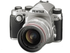
KP
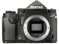
KP
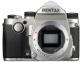
KP
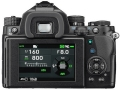
KP
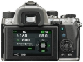
KP
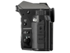
KP
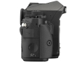
KP
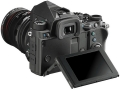
KP
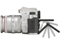
KP
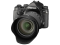
KP
评测 / 相关文章
- 详细内容 （存档）
- 向偏见开炮 宾得KP实战评测 （存档）
- ［试用］向偏见开炮 宾得KP实拍样张 （存档）
- ［资讯］向偏见开炮 宾得KP真机图赏 （存档）
- ［资讯］CP+2017独家报道 各家新货逐个品（下） （存档）
- ［资讯］先睹为快 宾得KP操作手册下载 （存档）
- ［资讯］APS-C新旗舰 理光PENTAX KP真机图赏 （存档）